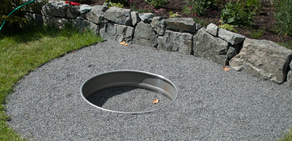
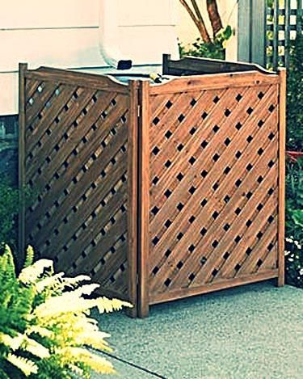
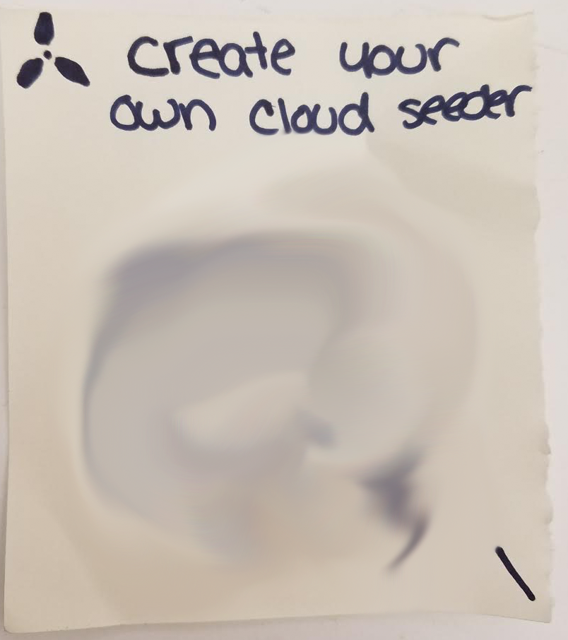
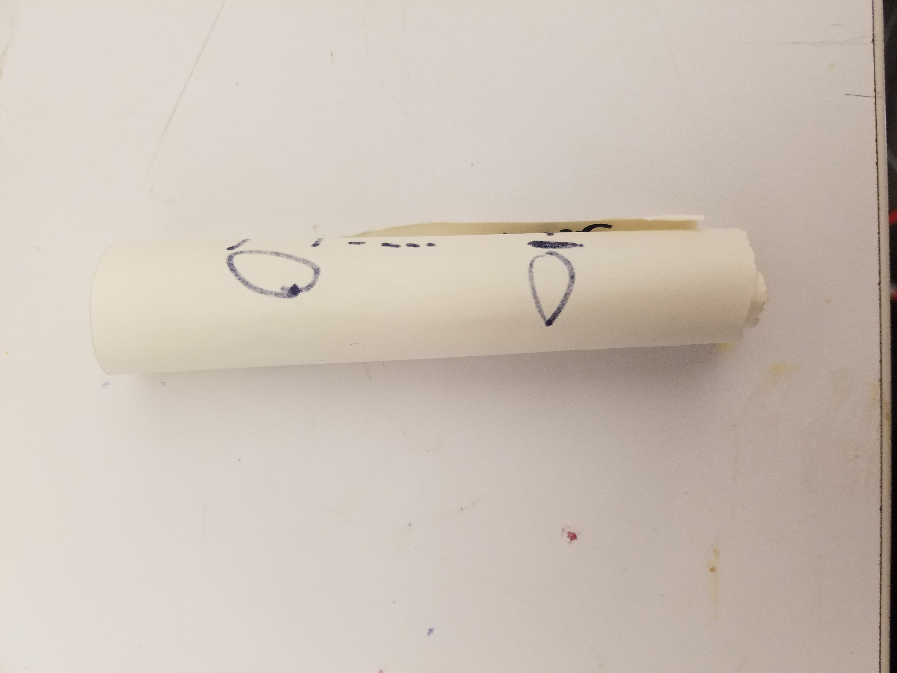

WWMC News
The official blog of the WWMC.
Report Any Illegal Seeding
Safety and security of the earth, our water and air, and the citizens of the world are of the upmost importance to the WWMC. Recently, many have written to us with concerns of bio-terrorism and radical groups. We take these notifications very seriously and are so greatful to those who bring to our attention and illegal or dangerous activity.
As many are aware, in 2204 an unschedule storm occured in Perugia, Italy. It was the first confirmed unofficial storm that occured as a result of illegal cloud seeding, as members of the group DOCS, or Democratization of Cloud Seeding, later claimed ownership of the storm.
As an effort to help those concerned with any radical bioterrorist activities in their neighborhood, WWMC will begin sharing illegal seeding materials on their website. If you your anyone you know sees any of these materials in your neighboorhood, please contact your local police, your call us at 1-346-346-6463

This underground cloud seeding device was found in the Nevada area. Buried within a pile of rocks, silver iodide could be burned through an underground tunnel within the resident's home.

Concealed in a wood box made to contain outdoor ac units, these covert cloud seeders are some of the most difficult to detect. One of the best indicators of a potential illegal seeder is the placement over a drainage pipe, used to stream chemicals directly through roof.
WWMC Helps Build Worshiping Space for Naturalist Movement
Last Sunday members of the Naturalist Movement and representatives from the WWMC gathered for the opening of a new worshiping space in Los Angeles, California.

It was one the first time that WWMC has worked with the Naturalist Movement to build a space for the community. Tensions between these two groups have grown in the last few years. After the Denver rainfall of 2203, when an unscheduled storm had occured and lasted 2 days, support for the Naturalist Movement in urban environemnts has increased 10-fold.
Previously, the Naturalist Movement consisted of members who moved away from big cities and closer to areas that received less cloud seeding due to the low levels of rainfall in these areas. However, support has since spread to larger and larger areas. As newly converted Naturalists in more populous areas have increased, with it some tension between these groups and the WWMC has as well, as Naturalist Movement members oppose the use of cloud seeding.
Last year, NM members in larger cities to protest the use of cloud seeding. Despite attempts from WWMC to explain the benifits of this progress, tenions continued to rise
Finally, after talks between leaders of the Denver sect of the Naturalist Movement and the WWMC, the groups agreed that communication would be key moving forward. Since there has been many friendly talks between the two groups, and recieving help from the WWMC to build the new worshiping space is a landmark moment in this new collaborative relationship.
Illegal Blueprints Circulating
Messages containing instructions on creating illegal home seed clouding documents have been found circulating in many major cities. (Information has been redacted from images below)
 Etiam porta sem malesuada magna mollis euismod. Cras mattis consectetur purus sit amet fermentum. Aenean lacinia bibendum nulla sed consectetur.
Donec ullamcorper nulla non metus auctor fringilla. Nulla vitae elit libero, a pharetra augue.